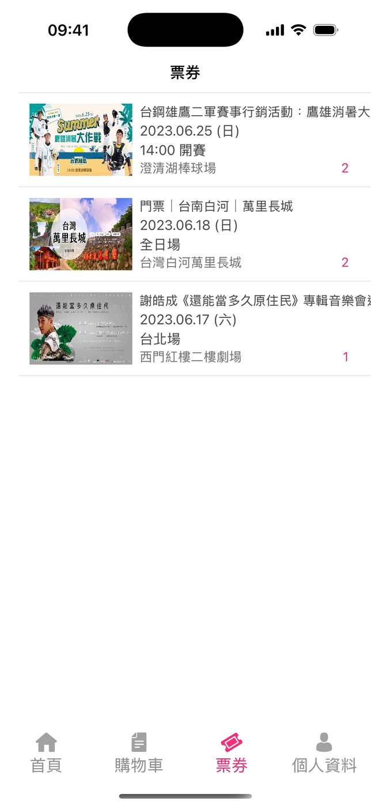
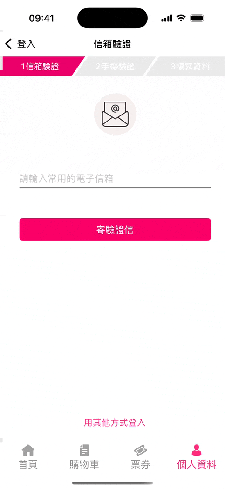
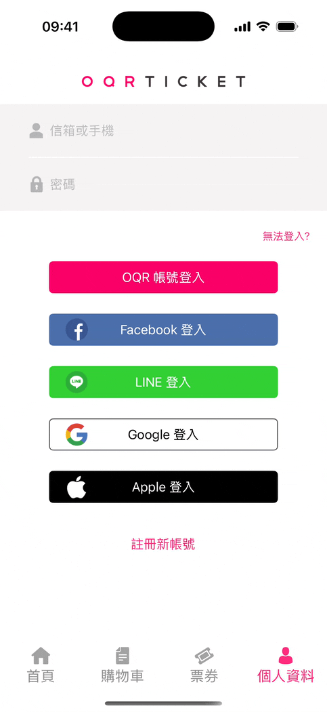
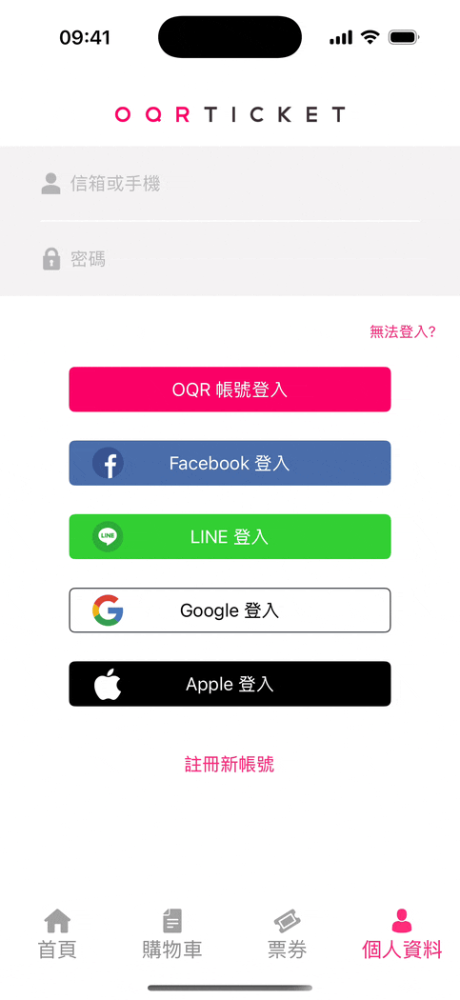
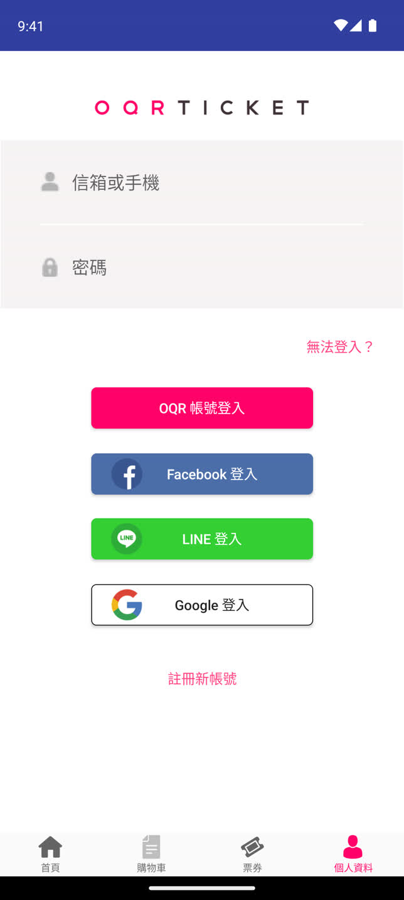
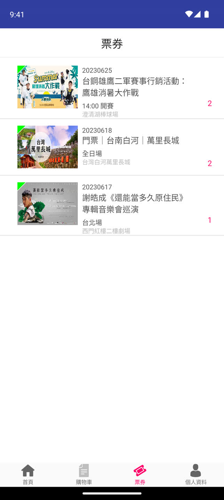
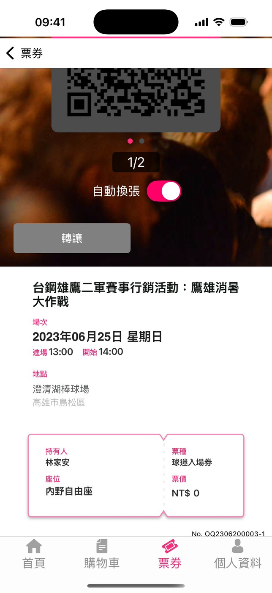
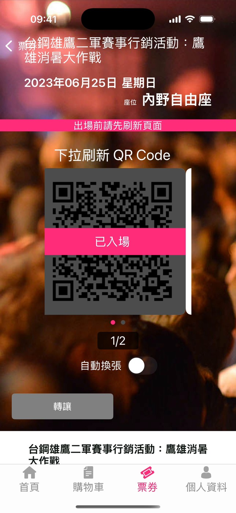
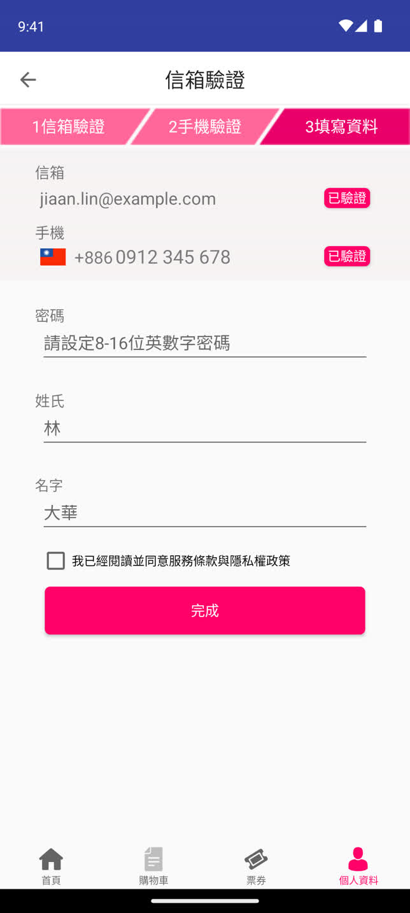

OQR Ticket の初版アプリ。チケットを購入して端末に保存し、入場時は QR コードを提示します。







| 項目 | 初版（引き継ぎ） | 新版（ゼロから開発） |
|---|---|---|
| 言語 | iOS は Swift、Android は Java | iOS は Swift、Android は Kotlin 中心 |
| 構成 | MVC、画面から直接 API を呼び出し | MVVM ＋ Hybrid（WebView） |
| 共通ロジック | なし（両OSで別々に実装） | Kotlin Multiplatform |
| 通信 | iOS は URLSession と Alamofire、Android は AsyncTask | Ktor（共通） |
| 端末内データ | SQLCipher（両OSで別々に SQL を記述） | SQLDelight（共通） |
| 入場 | 2段階の QR コード＋ゲートの音波 | 同じ仕組み、SDK は共通モジュールで扱う |

MVC 構成。通信とデータモデルは Singleton に集約し、新機能は共通処理を経由